10 Graphiques avec ggplot2
10.1 Rationale
Il est peu dire que le package ggplot2 a changé la face de la représentation graphique en R.
Le package de base, graphics1 permet certes de tout faire mais laborieusement. D’autres packages (lattice par exemple) permettent une création plus proche de l’utilisateur·trice, moins proches des “primitives” (segments, points, etc.) graphiques.
La force de ggplot2, d’abord écrit par Hadley Wickham, est d’implémenter la Grammar of Graphics de Leland Wilkinson qui dissocie les données de leurs représentations, de façon déclarative. Nous déclarerons ainsi à un jeu de données, des modes de représentation (des geom_) qui s’appuieront eux-mêmes sur des déclarations d’axes des abscisses, des ordonées, des couleurs, des tailles etc. (via aes), nous préciserons les axes (coord_), les paramètres de style theme.
Nous obtiendrons finalement un graphe que nous pourrons modifier à soit et qui sera même, en soit, une machine à faire d’autres graphes.
ggplot2 s’installe classiquement avec install.packages("ggplot2") mais il est compris dans le tidyverse que vous avez du installer précédemment avec install.packages("tidyverse").
Pour charger ggplot2, il suffit de taper library(ggplot2) ou encore library(tidyverse).
10.2 Un premier graphe
ggplot2 travaille sur des data.frames (ou des tibbles mais c’est la même chose). Tout jeu de données qui n’est pas un data.frame sera converti ou tenté de l’être avec fortify. Le plus simple pour ne pas avoir de surprises étant de convertir vos données en un data.frame en bonne et due forme, vous-mêmes.
Nous allons utiliser iris qui est déjà un data.frame mais que nous allons, pour la cosmétique, convertir en tibble et en renommer les colonnes
iris2 <- iris %>%
as_tibble() %>%
rename(pl=Petal.Length, pw=Petal.Width,
sl=Sepal.Length, sw=Sepal.Width, sp=Species)
iris2 # iris, as tibble and with more compact column names# A tibble: 150 × 5
sl sw pl pw sp
<dbl> <dbl> <dbl> <dbl> <fct>
1 5.1 3.5 1.4 0.2 setosa
2 4.9 3 1.4 0.2 setosa
3 4.7 3.2 1.3 0.2 setosa
4 4.6 3.1 1.5 0.2 setosa
5 5 3.6 1.4 0.2 setosa
6 5.4 3.9 1.7 0.4 setosa
7 4.6 3.4 1.4 0.3 setosa
8 5 3.4 1.5 0.2 setosa
9 4.4 2.9 1.4 0.2 setosa
10 4.9 3.1 1.5 0.1 setosa
# ℹ 140 more rowsLes étapes suivantes sont toujours les mêmes :
- déclarer le
data.frameà utiliser (iris2ici) - déclarer quelles colonnes doivent être utilisées (nous voulons la largeur de pétale
pwen fonction, enyen somme, de la longueur de pétalepw). - déclarer le mode de représentation (ici un nuage de points
geom_point, mais quantité d’autresgeomexistent comme les histogrammes, les boxplots, etc.)
ggplot2 utilise l’opérateur + pour assembler ces différentes couches, après la fonction ggplot() qui initie le graphe.
iris2 %>%
ggplot() +
aes(x=pl, y=pw) +
geom_point()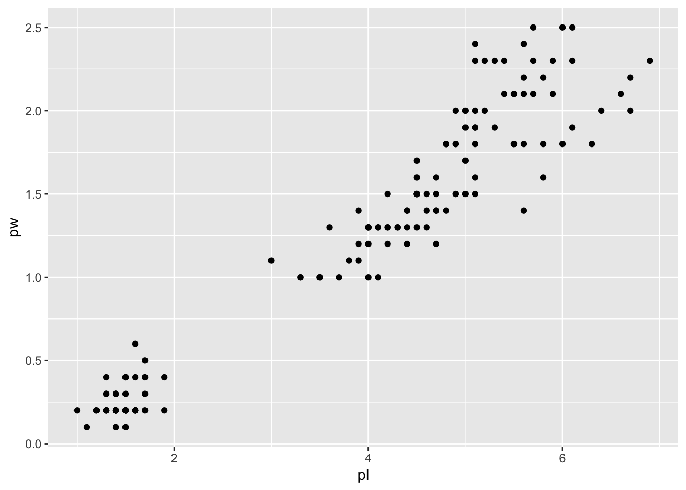
Vous trouverez parfois la déclaration du data.frame aes au sein de ggplot() comme cela : ggplot(iris2, aes(x=pw, y=pl)). J’ai tendance à tout éclater comme ci-dessus, mais à vous de voir.
10.3 Un deuxième geom et un sacrifice
Si vous vous amusiez à compter le nombre de points représentés, ou plus intelligemment iris2 %>% select(pl, pw) %>% unique() %>% nrow(), vous réaliseriez que 42 points ne sont pas visibles. La faute n’en incombe nullement à ggplot2 mais à la précision des instruments de mesure au moment de l’acquisition de données ! Plus exactement, ils sont visibles mais superposés.
Cette mise en garde nous donne l’occasion de présenter un deuxième geom qui introduit suffisamment de bruit dans les données pour que tous les points soient représentés tout en gardant la relation générale entre les deux variables pw et pl. En d’autres termes, nous sacrifions l’exactitude pour gagner en fidélité du nombre de points effectivements présents.
La représentation visuelle de l’information quantitative est souvent affaire de sacrifices et elle est un domaine de recherche à part entière. Offrez-vous ou faites vous offrir la bibliographie complète d’Edward Tufte !
Voilà un iris2 avec ses 150 iris :
iris2 %>%
ggplot() +
aes(pl, pw) +
geom_jitter()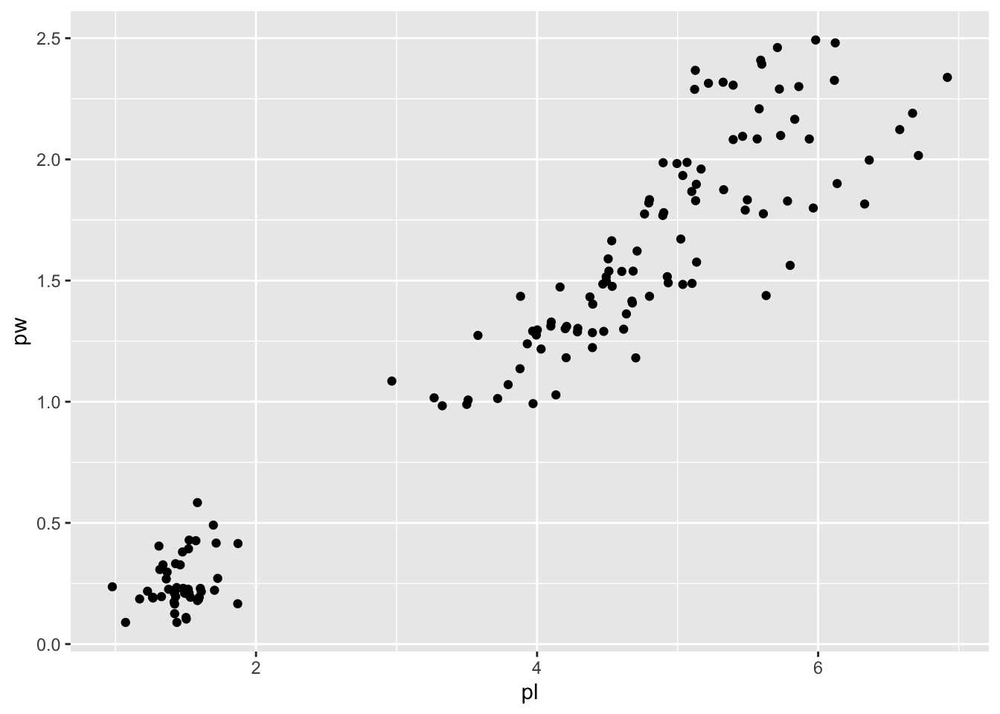
10.4 aes : d’autres variables sur le même graphe
aes règle les aesthetics de votre ggplot. Si par exemple vous voulez associer chaque espèce à une couleur, il vous suffit de rajouter col=sp dans aes() et la légende est automatiquement générée :
iris2 %>% ggplot() +
aes(pl, pw, col=sp) +
geom_jitter()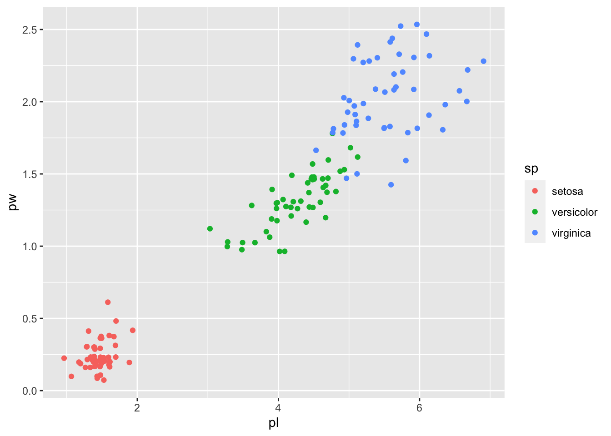
Dans le même esprit, si vous vouliez rajouter les dimensions des sépales comme encodage des tailles de point, c’est dans aes() que ça se passe. Vous pouvez même créer à la volée, dans aes même, des opérations sur les colonnes de iris2. Une “pseudo-aire”, faisant fi de la forme mais intégrant la longueur et la largeur des sépales peut se créer comme suit :
iris2 %>% ggplot() +
aes(pl, pw, col=sp, size=sw*sl) +
geom_jitter()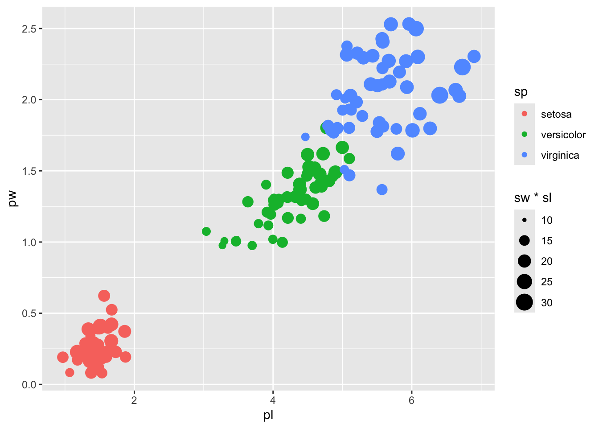
10.5 Tendances et modèles statistiques
La production de graphes est centrale dans l’exploration de données et ggplot2 en fait une tâche simple. stat_smooth va ajouter une courbe de tendance aux données représentées.
gg <- iris2 %>% ggplot() + aes(pl, pw) + geom_point()
gg + stat_smooth()`geom_smooth()` using method = 'loess' and formula = 'y ~ x'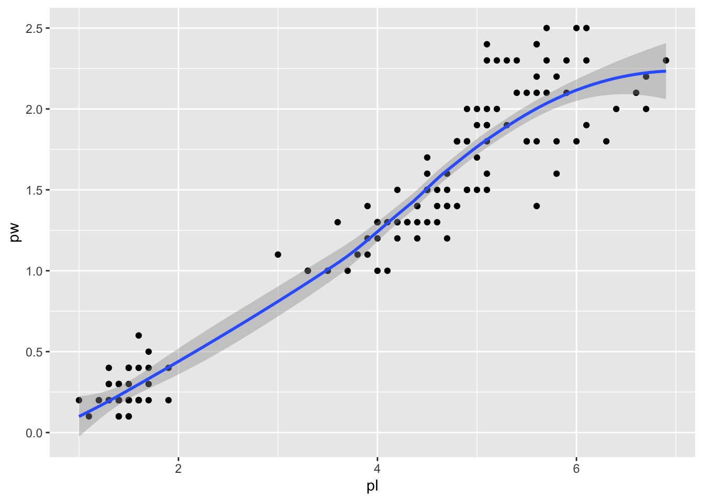
Deux choses. D’abord, ggplot2 vous avertit que la courbe ajoutée utilise loess, c’est à dire un ajustement polynomial local calé sur y~x. Si ces messages vous ennuient, il vous suffit de préciser à geom_smooth d’utiliser ces modèles (geom_smooth(method="loess", formula="y~x")). Ensuite, peut être vous aviez plutôt en tête un bon vieux modèle linéaire avec lm plutôt que ce loess certes flatteur mais qui ne sied peut-être pas à votre esprit naturellement parcimonieux. Bonne nouvelle, c’est très simple :
gg + geom_smooth(method="lm", formula="y~x")
Après avoir contemplé ce graphe, vous vous dites que ce modèle linéaire, moyennant que la longueur de pétale soit inférieure à 2 vous prédirait des largeurs de pétales négatives. Ce qui vous en conviendrez n’a guère de sens, ni pour un·e biologiste, ni même pour un·e statisticien·ne (c’est dire !).
Vous l’avez deviné si vous avez déjà utilisé lm(), ça se passe dans dans la spécification de la formula. Pour forcer le modèle à ne pas avoir d’intercept (ou plutôt un intercept égal à 0), vous pouvez spécifier -1 dans la formule. Je sais que ce n’est pas très intuitif mais vous consulterez avec volupté ?formula pour plus d’informations.
gg + geom_smooth(method="lm", formula="y~x-1")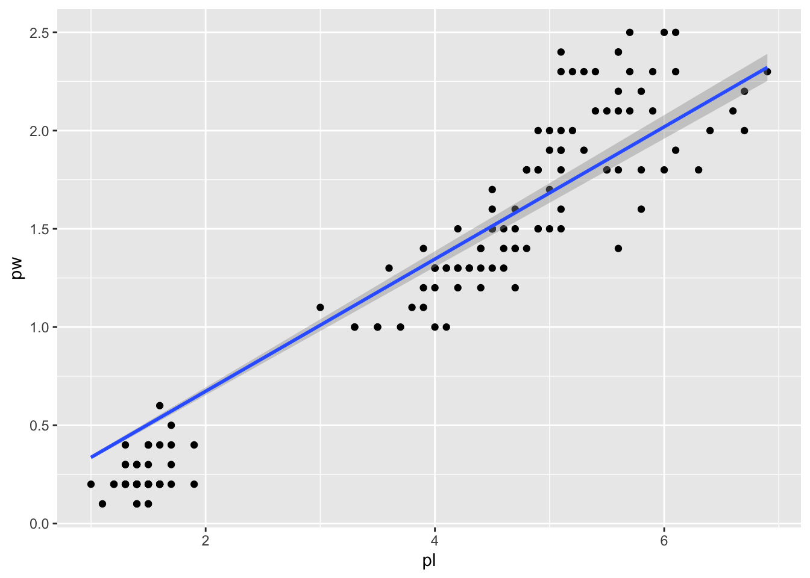
Dans le même esprit si nous voulions forcer la relation à être quadratique, nous aurions pu :
gg + geom_smooth(method="lm", formula="y~I(x^2)+x-1")
La couleur de la droite (ou de la courbe) de régression, ainsi que la présence ou non d’un intervalle de confiance peuvent se préciser, toujours dans geom_smooth. Par exemple :
gg + geom_smooth(method="lm", formula="y~x-1", se=FALSE, col="red", linetype="dashed")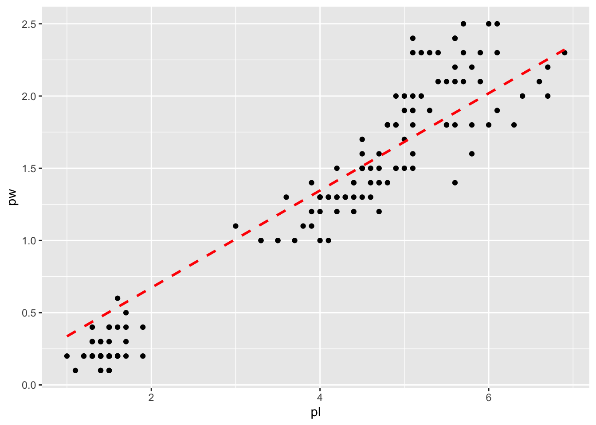
Ces paramètres se et colour sont documentés dans ?geom_smooth et ne s’appliquent qu’à ce geom, pas à l’échelle globale du ggplot ni même des autres geoms. Par exemple :
gg +
geom_smooth(method="lm", formula="y~x", col="green", se=FALSE) +
geom_smooth(method="lm", formula="y~x-1", col="purple") # no intercept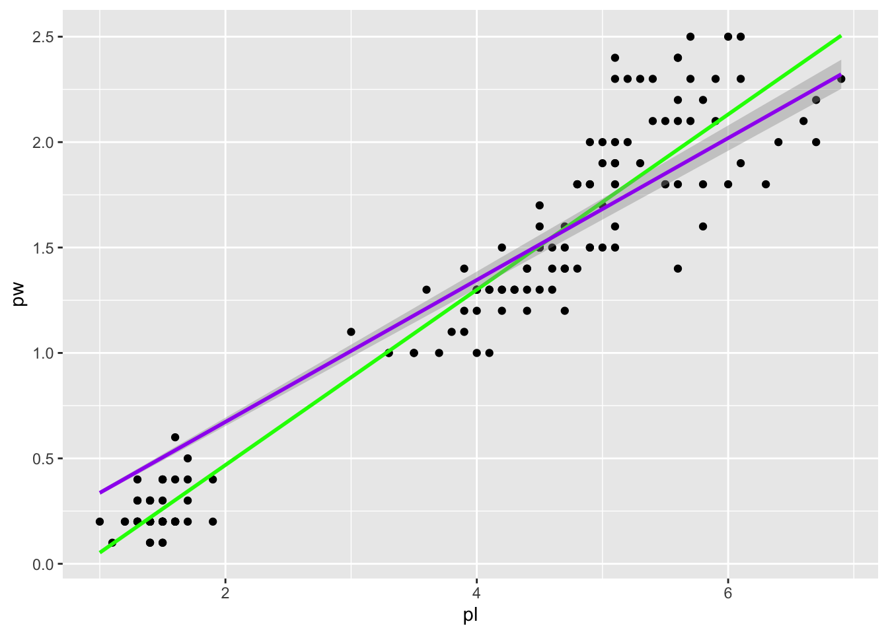
Un petit rappel à la doxa ne faisant jamais de mal :
ce n’est pas parce que produire des droites/courbes de tendance est facile que vous êtes autorisé·e à le faire
Si votre modèle n’est pas “significatif”, vous n’êtes pas vraiment autorisé·e à le représenter. Naturellement vous pouvez le faire en cachette mais dans un article vous allez vous faire tomber dessus par le·a post-doc qui se tape la review !
Il n’y a aucun moyen à ma connaissance de le faire avec ggplot2, ni même de récupérer les modèles créés en interne par ce dernier mais vous aurez, quoiqu’il en soit, besoin de les explorer par ailleurs. Recréeons le modèle sans intercept :
mod <- lm(pw~pl-1, data=iris2)
mod
Call:
lm(formula = pw ~ pl - 1, data = iris2)
Coefficients:
pl
0.3365 summary(mod)
Call:
lm(formula = pw ~ pl - 1, data = iris2)
Residuals:
Min 1Q Median 3Q Max
-0.48446 -0.24366 -0.13699 0.08642 0.68379
Coefficients:
Estimate Std. Error t value Pr(>|t|)
pl 0.336511 0.005063 66.46 <2e-16 ***
---
Signif. codes: 0 '***' 0.001 '**' 0.01 '*' 0.05 '.' 0.1 ' ' 1
Residual standard error: 0.2573 on 149 degrees of freedom
Multiple R-squared: 0.9674, Adjusted R-squared: 0.9672
F-statistic: 4417 on 1 and 149 DF, p-value: < 2.2e-16Sans surprise, le modèle linéaire est “significatif” et le(s) R2 excellents. Vous pouvez donc représenter ces modèles.
Le clou du spectacle désormais : si nous avons déclaré une couleur par espèce d’iris, le reste suit. Le reste ici étant un modèle linéaire. Tadan !
gg <- iris2 %>%
ggplot() +
aes(pl, pw, col=sp) +
geom_point() +
geom_smooth(method="lm", formula="y~x")Notons que si vous ne voulez PAS que le reste suive, en termes plus formels que geom_smooth() n’hérite pas des paramètres globaux de aes, il vous suffit de déclarer un aes local au paramètre mapping, le premier argument de tous les geom :
iris2 %>%
ggplot() +
aes(pl, pw, col=sp) +
geom_point() +
geom_smooth(mapping = aes(col=NULL), method="lm", formula="y~x")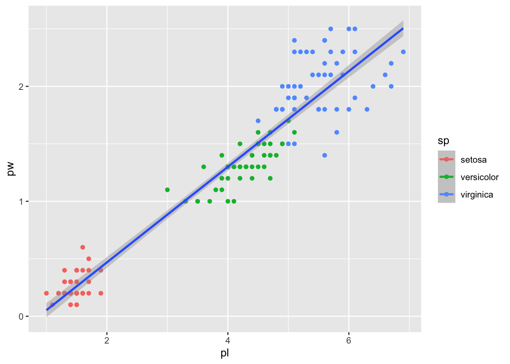
10.6 Interlude cosmétique : labs, theme et scale_
Puisque je sens que vous commencez à tomber éperdument amoureux·se de ggplot2, il est temps d’enfoncer le clou avec un peu de cosmétique.
Le nom des axes ainsi que les titres et sous-titres sont faciles à modifier :
gg <- gg +
xlab("Petal length (mm)") +
ylab("Petal width (mm)") +
labs(title="Another iris graph", subtitle = "beware of those who don't like flowers")
gg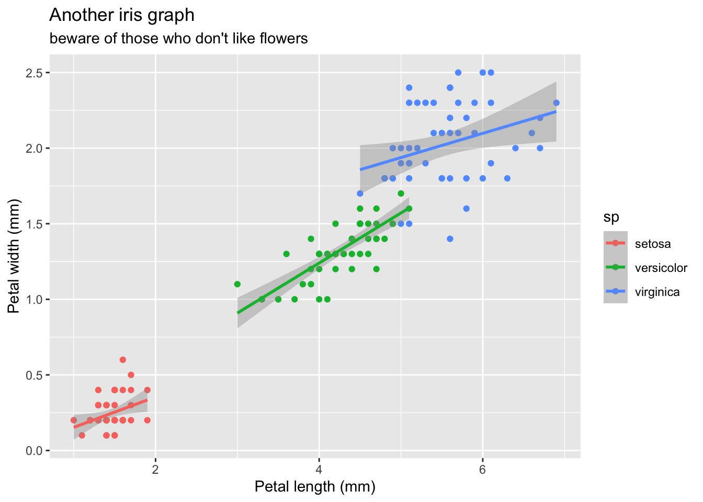
Le “thème” général des graphes peut être modifié. Vous pouvez essayer les autres, tapez theme_ puis pressez <Tab>.
gg + theme_minimal()
Chaque élément individuel peut être modifié. Sachez que c’est un terrain glissant, susceptible de vous désociabiliser. Avec un peu de sueur on fait exactement ce que l’on veut, y compris pire :
gg + theme(axis.title.x = element_text(face="bold"),
axis.text.y = element_text(angle=45),
panel.background = element_rect(fill="pink"))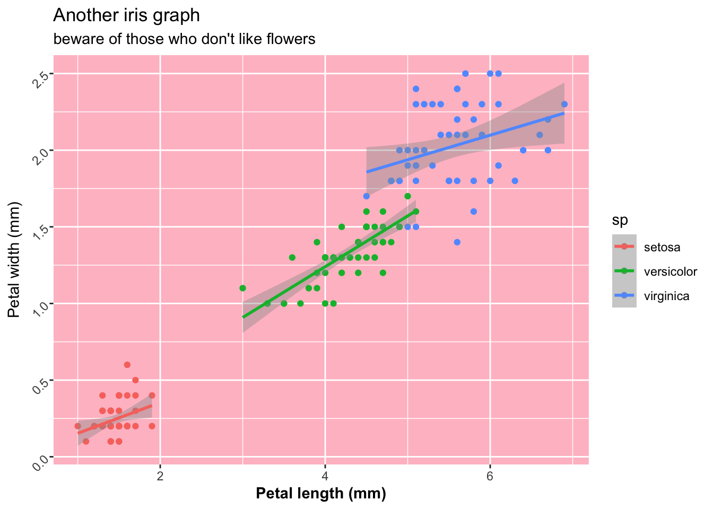
Si l’un des thèmes vous convient et/ou que vous en avez customisé un, vous pouvez le définir pour tous les graphes avec theme_set.
Enfin, et l’on s’écarte un peu de la pure cosmétique, vous pouvez ajuster les systèmes de représentation des axes, à commencer par leurs limites :
gg + scale_x_continuous(limits=c(0, 8))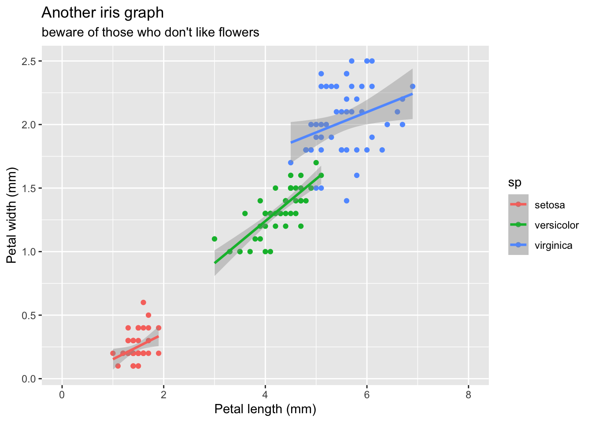
Pour la seule étendue, on préferera xlim() et ylim() mais la fonction scale_x_continuous fait beaucoup plus.
Vous pouvez même changer le système de coordonnées. Si par exemple vous représentez un plan factoriel d’ACP, vous aurez besoin de contraindre l’aspect y/x de telle façon qu’un centimètre sur x à l’écran, représente également un centimètre sur y.
gg + coord_equal()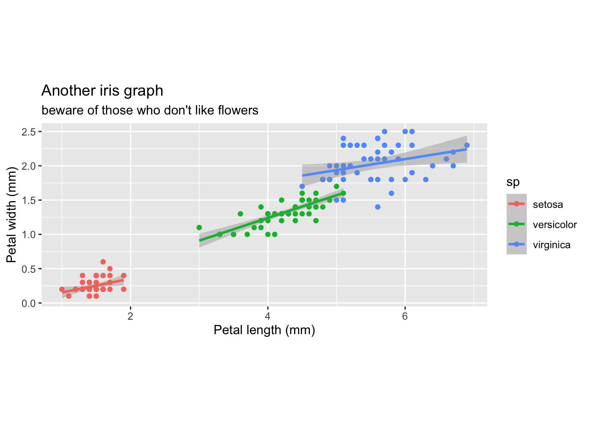
Les régressions sont moins flatteuses 2 mais on a bel et bien un plan euclidien.
Enfin, vous pétez les plombs et vous vous lancez dans l’étude des vents, ou quoique ce soit d’autre avec des coordonées polaires. La famille coord_* vous permet de changer carrément le système de coordonées :
gg + coord_polar()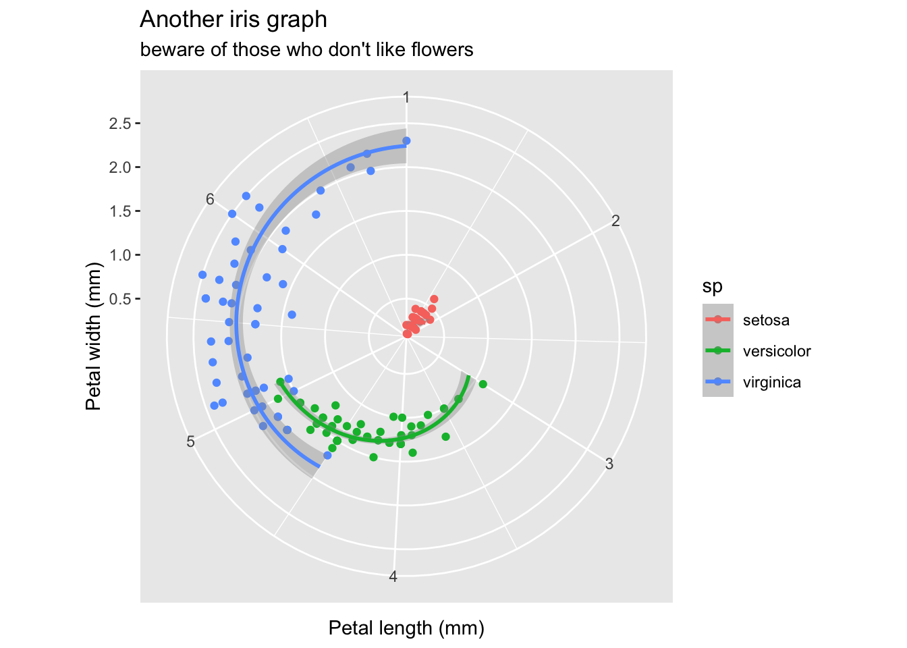
coord_flip vous sera aussi utile si vous désirez culbuter le graphe et passer les x en y et vice-versa.
10.7 geom (suite) : deux variables continues
Moult autres geoms sont disponibles dans ggplot2 et sont présentés graphiquement ici.
Pour continuer sur deux variables continues, on pourra rajouter facilement des courbes ou autres éléments de densité. Toutes les opérations kernel sont faites pour vous donc vous n’avez pas vraiment à vous en soucier. 150 points c’est un peu limite pour ces fonctions mais restons fidèles à iris :

Naturellement, vous pouvez rajouter les points. L’ordre de représentation est celui des déclarations. Si vous passez geom_point après geom_density2d, les points seront représentés au-dessus des courbes de densité :
gg + geom_density2d_filled(col="grey90") + geom_point(col="white") + coord_equal()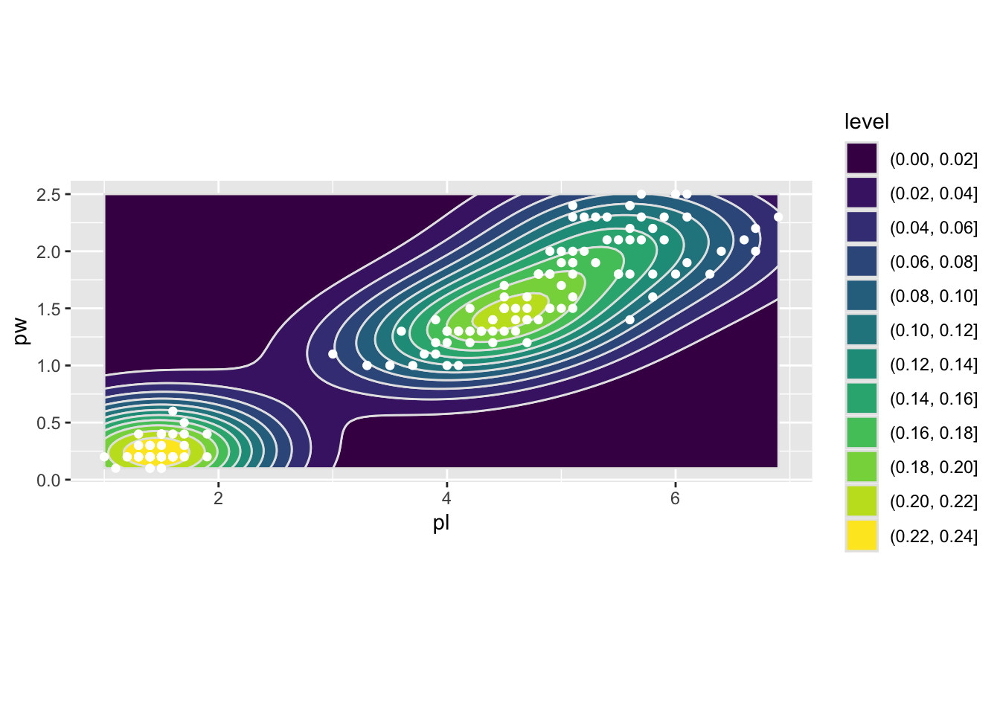
Classieux n’est-ce pas ?
10.8 geom (suite) : une seule variable continue
Quand vous n’avez qu’une seule variable continue c’est vraisemblablement que vous vous intéressez à sa distribution, c’est à dire que vous voulez un histogramme ou sa densité, selon que vous vouliez binner vos données ou les garder continues. Quelques exemples ci-dessous et je vous laisse explorer en autonomie.
gg <- iris2 %>% ggplot() + aes(pl)
gg + geom_histogram()`stat_bin()` using `bins = 30`. Pick better value with `binwidth`.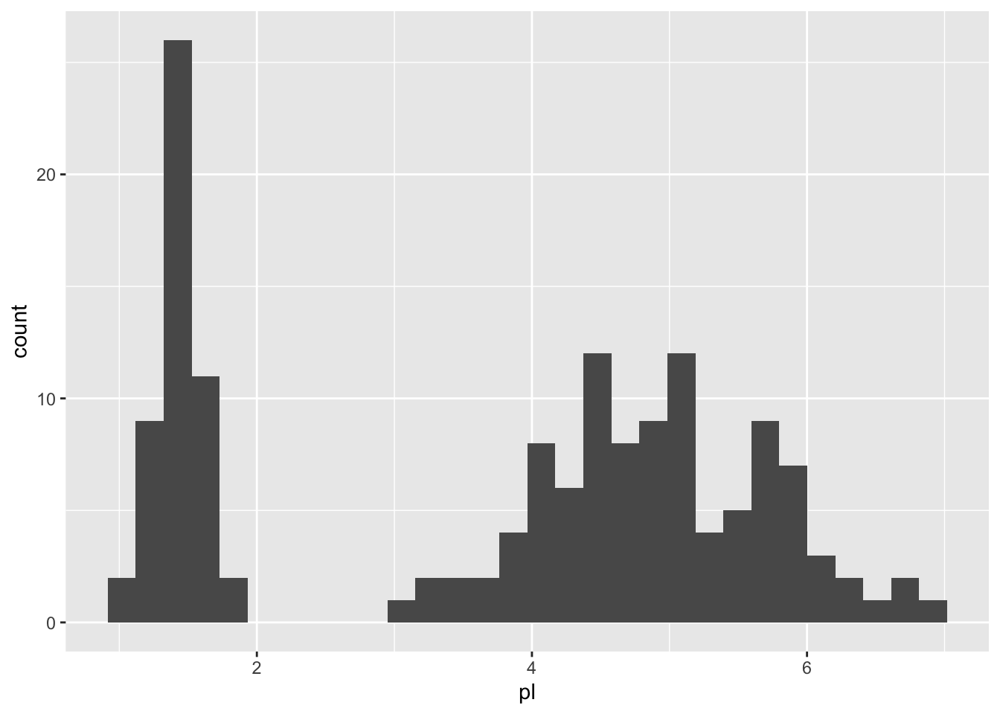
gg + geom_density()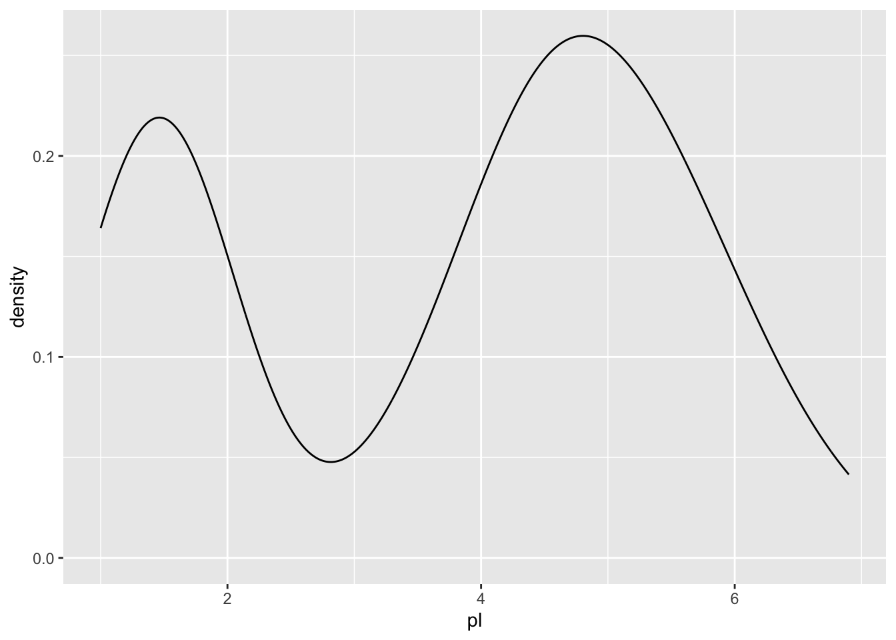
gg + geom_dotplot()Bin width defaults to 1/30 of the range of the data. Pick better value with
`binwidth`.
Quand
ggplot2et plus généralementRvous enquiquine avec un message c’est souvent pour votre bien.
10.9 geom (suite) : une variable continue et un facteur
ggplot2 a tout ce qu’il vous faut pour représenter des boxplots et variantes :
gg <- iris2 %>% ggplot() + aes(x=sp, y=pl, fill=sp)
gg + geom_boxplot()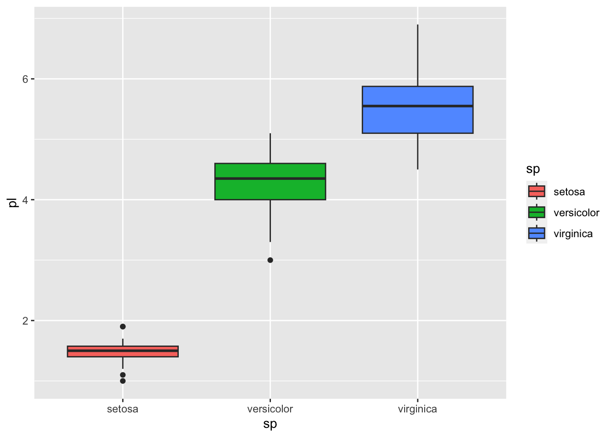
gg + geom_violin() + geom_jitter() + coord_flip()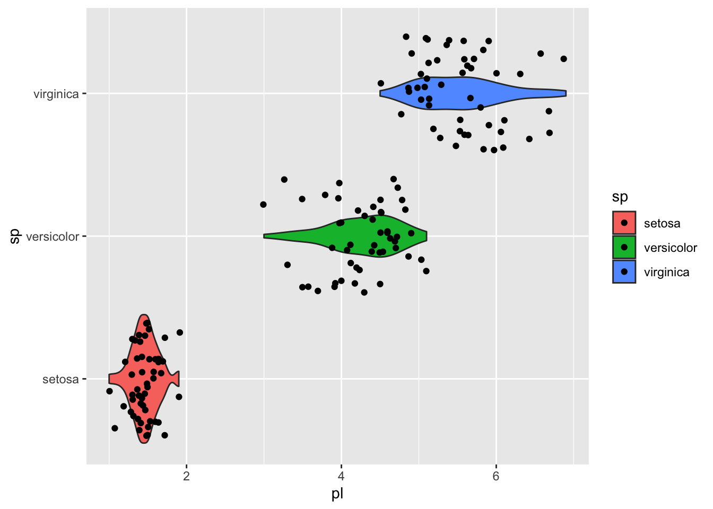
10.10 Les sous-graphes avec facet_
Une famille de fonction très puissante en ggplot2 est celle des facet_ qui vous permettent de faire des sous-graphes facilement. Pour que l’exemple soit encore plus aiguisé, nous allons créer une autre colonne facteur dans iris2 simulant cinq sessions de terrain, de mesure de 10 iris par espèce par session. Puis nous allons créer un graphe de base, l’occasion de montrer l’utilisation de shape.
iris2 <- iris2 %>% mutate(session=factor(rep(rep(LETTERS[1:5], each=10), 3)))
gg <- iris2 %>% ggplot() +
aes(pl, pw, col=sp, shape=session) +
geom_jitter() + geom_smooth(method="lm", formula="y~x-1", se=FALSE) +
theme_linedraw()
gg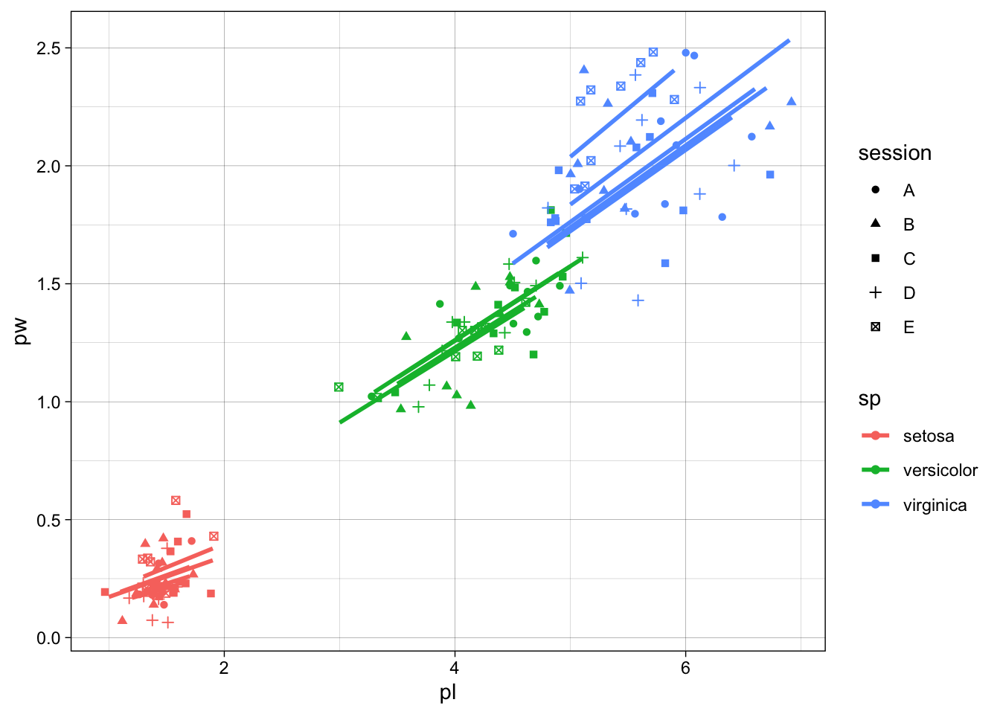
Nous conviendrons qu’on y voit goutte. Surtout entre sessions. facet_grid est votre ami. Vous pouvez spécifier qui va en ligne, qui va en colonne et si les échelles doivent être fixes ou peuvent être libres. Quelques exemples :
gg + facet_grid(session~sp)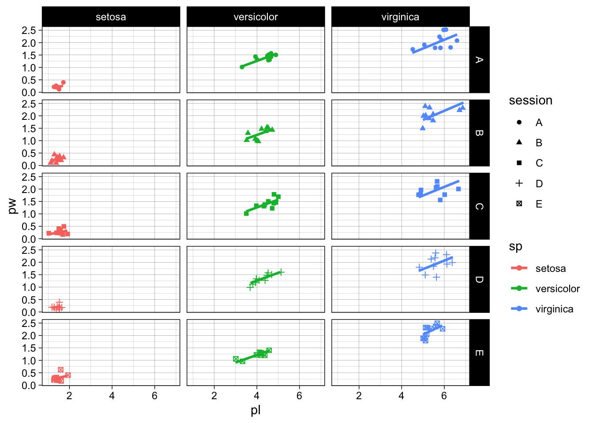
gg + facet_grid(.~sp, scales="free")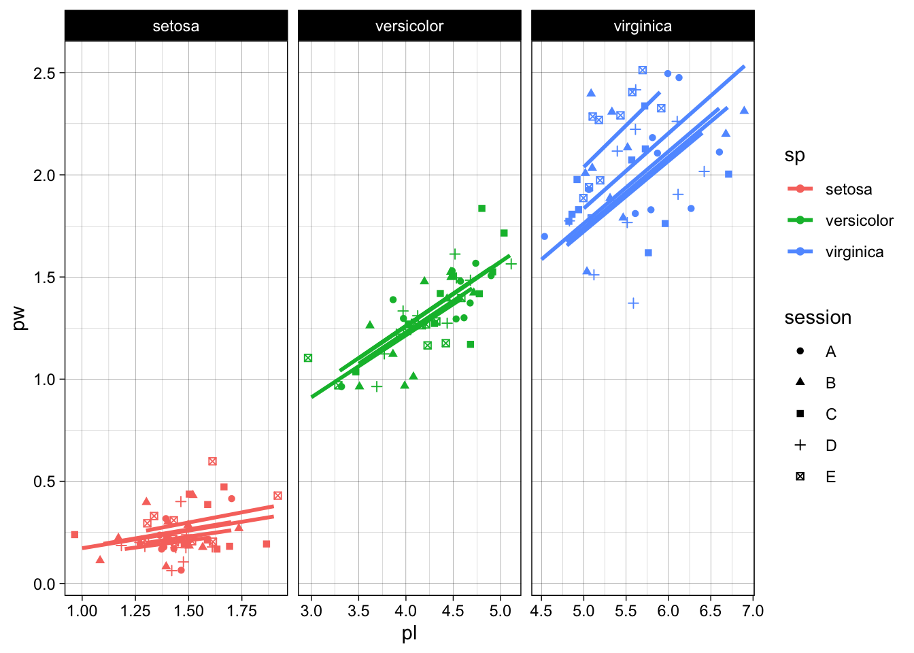
gg + facet_grid(session~., scales="fixed")
Pratique ! Notez que quand vous ne voulez qu’une dimension, vou spouvez omettre l’un des membres à gauche ou à droite et le remplacer par un .. 3
facet_wrap est plus lâche dans sa définition et ne veut qu’une seule colonne, dont les sous-graphes correspondant seront simplement enroulés selon des dimensions plaisantes, que vous pouvez spécifier :
gg + facet_wrap(~session, nrow=2)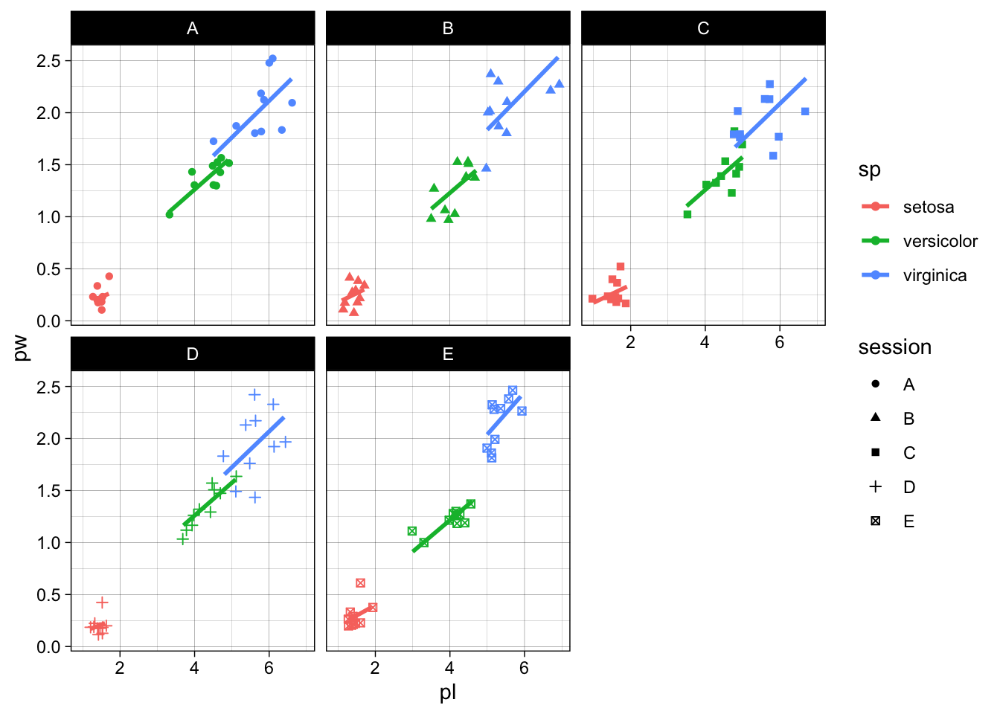
10.11 Interlude cosmétique : scale_ (suite) et guides
Si vous ne vous pâmez pas devant les couleurs par défaut, il est naturellement possible de les changer avec une des fonctions scale_color_*. Il en va de même pour les autres modes de représentation définis dans aes.
gg <- iris2 %>% ggplot() + aes(pl, pw, col=sp, size=sl) + geom_point()
gg + scale_color_viridis_d(option = "B") + scale_size(range=c(0.5, 2))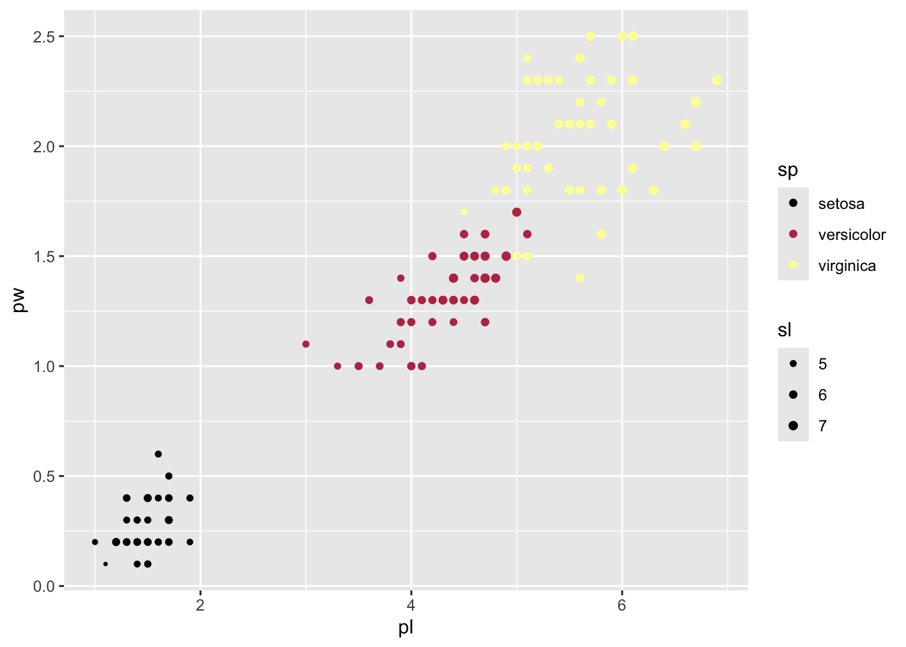
Je vous laisse explorer les scale_ en autonomie. Oui, il y a moyen d’y passer des journées. Le choix des couleurs est un sujet central car il faut penser à tout le monde : les daltoniens, les imprimantes noir et blanc. Et encore plus largement la perception des couleurs par l’œil et le cerveau humains.
Vous pouvez également ne pas vous en réferer à des palettes pré-construites et fixer vos propres couleurs avec un vecteur nommé et l’une des fonctions scale_*_manual :
sp_cols <- c("setosa"="navyblue", "versicolor"="purple", "virginica"="firebrick3")
gg + scale_color_manual(values=sp_cols)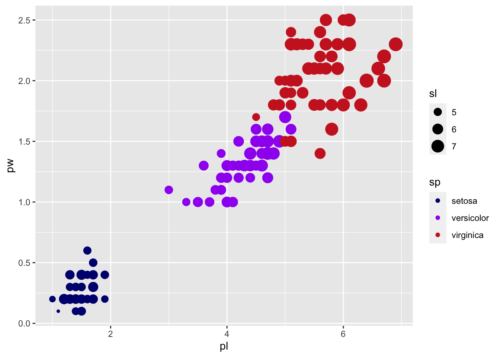
10.12 %+% : une fabrique à graphes
Plus haut, je vous ai promis que les graphes ggplot2 étaient en soit des machines à faire des graphes4. Imaginons que nous disposions d’un autre jeu de données se présentant de la même façon, typiquement avec les mêmes colonnes utilisées par un ggplot que vous auriez construit avec amour et simplicité :
gg <- ggplot(iris2) + aes(pl, pw, col=sp) + geom_point()
gg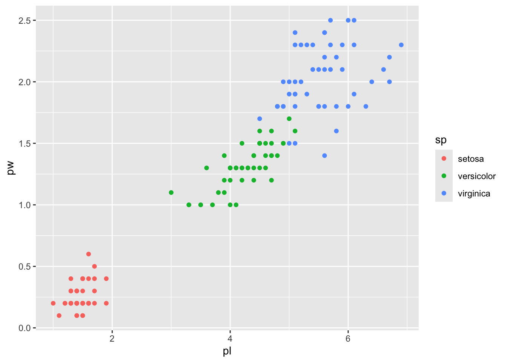
Et voilà un autre jeu de données, avec un peu de bruit gaussien pour tout le monde :
# A tibble: 150 × 6
sl sw pl pw sp session
<dbl> <dbl> <dbl> <dbl> <fct> <fct>
1 5.1 3.5 1.05 0.247 setosa A
2 4.9 3 1.53 0.621 setosa A
3 4.7 3.2 1.28 0.167 setosa A
4 4.6 3.1 1.93 0.830 setosa A
5 5 3.6 0.972 -0.917 setosa A
6 5.4 3.9 1.47 -0.410 setosa A
7 4.6 3.4 1.38 0.667 setosa A
8 5 3.4 1.40 0.861 setosa A
9 4.4 2.9 0.997 0.0324 setosa A
10 4.9 3.1 2.01 -0.285 setosa A
# ℹ 140 more rowsNous pouvons remplacer le jeu de données utilisé initialement par gg (c’est à dire iris2) par votre nouveau jeu de données (c’est à dire iris_bis), en utilisant l’opérateur %+% :
gg %+% iris_bis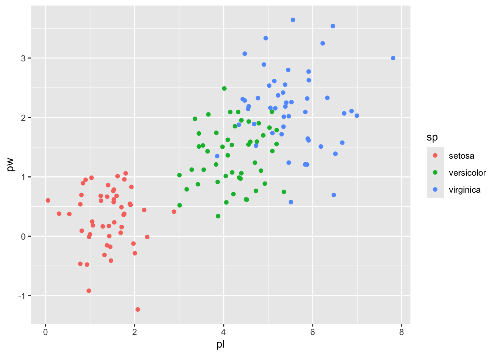
Vous pouvez même modifier le ggplot ainsi obtenu. Ci-dessous, je pousse le bouchon jusqu’à manipuler au tout dernier moment iris_bis pour ajouter un numéro d’individu séquentiel et ajouter une étiquette avec geom_label, une variante de geom_text, tous deux bien utiles. À y être, je rajouter aussi une petite annotation, alignée à gauche sur le point (1; 2.5).
10.13 Un package bien utile : patchwork
Quantité de packages existent pour étendre encore les fonctionnalités de ggplot2. Nous pouvons citer :
-
plotly: pour des graphes interactifs -
ggmap: gestion des données spatiales et des projections -
ggrepel: pour avoir des étiquettes de données non juxtaposées -
ggdendro: representer des dendrogrammes et autres arbres - etc.
Nous ne présenterons que patchwork: qui permet l’assemblage intuitif de graphes. Son fonctionnement est simplissime. Si vous avez plusieurs ggplot vous pouvez les assembler, comme des “méta-facet” en quelque sorte. Les opérateurs + et / construisent un seul ggplot juxta- ou superposés :
plot_layout et plot_annotation sont très utiles pour des compositions plus sophistiquées.
Enfin, si vous avez non pas deux mais une quantité de graphes, par exemple dans une liste, wrap_plots fait le job.
Imaginons que je vous ai convaincu·e de ne désormais plus faire de terrain et de simuler vos données. Imaginons que vous simuliez K, disons 6, sessions de mesures.
Le map ci-dessous fera l’objet de tout le chapitre suivant. Ici, un simple aperçu de sa puissance.
10.14 Sauvez vos créations avec ggsave
Une fois que vous êtes satisfait·e de votre ggplot, vous pouvez le sauver vers un pdf, eps, jpg, png, etc. facilement avec la fonction ggsave.
Il vous suffit d’appeller ggsave avec le nom de fichier et son extension correspondant au format que vous voulez sauver. Vous pouvez aussi spécifier la largeur et la hauteur de sortie. Par défaut ggsave sauve le dernier graphe produit mais vous pouvez spécifier l’argument plot de ggsave.
ggsave("my_plot_1.pdf", gg, width=12, height=8)10.15 Considérations post-liminaires
ggplot2 peut-être frustrant dans les premiers temps. Comme vous le savez la frustration est typique mais temporaire. ggplot2 mérite définitivement de s’y accrocher et les larmes de hargne seront bientôt remplacées par des cris de joie et des apéros en terrasse grâce au temps gagné.